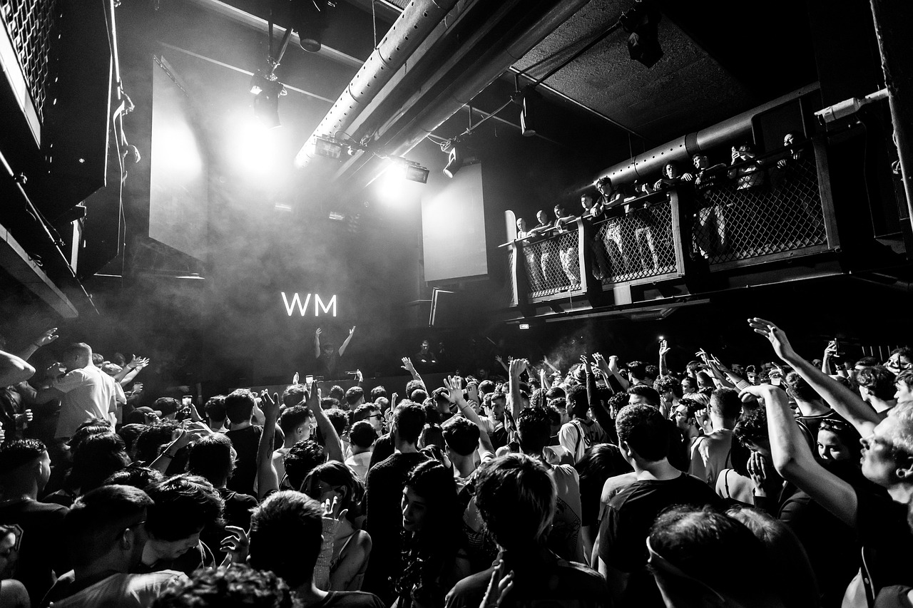

yaşıyor, zevk ediniyor,
bazılarını paylaşıyor
İnsan Tek Başına Yaşayamaz: Sosyalleşmenin Gücü
İnsan sosyal bir varlıktır derler ya, gerçekten öyle. Ne kadar “ben yalnızlığı seviyorum” desek de, bir
süre sonra içimizde bir eksiklik hissederiz. Çünkü insan, konuşmak ister, anlaşılmak ister, birlikte
gülmek ister.
Sosyalleşmek sadece dışarı çıkıp bir yerlere gitmek değildir. Bazen bir dostla çay içmek, bazen aileyle
dertleşmek, bazen de yeni biriyle tanışıp hayatına bir pencere daha açmaktır. Bu yüzden sosyalleşmek,
ruhun gıdası gibidir.
Uzun süre yalnız kalınca insanın içi daralır. Her şey anlamsızlaşır. Sabah uyanmak bile zor gelir bazen.
Ama bir mesaj, bir telefon, bir kahkahalı sohbet... İşte bunlar moralimizi yerine getirir.
Sosyalleşmek bizi geliştirir. Yeni fikirler duyarız, farklı hayatlar görürüz, bakış açımız değişir. Hep
kendi içimize dönersek, düşüncelerimiz de kısır döngüye girer. Oysa ki başkalarının hikâyelerinde
kendimizi bulabiliriz.
Ayrıca sosyalleşmek, yalnız olmadığımızı hatırlatır. Dertlerimizi paylaşınca hafifler. Bazen bir dost,
psikolog gibi gelir insana. Sadece dinlemesi bile yeterlidir. Çünkü bazen konuşmak, ilaç gibidir.

Teknolojiyle birlikte sosyalleşme şeklimiz değişti ama ihtiyacımız azalmadı. Online görüşmeler,
mesajlaşmalar güzel ama yüz yüze temasın yeri başka. Birinin gözlerinin içine bakarak konuşmak bambaşka
bir etki yaratır.
İnsanoğlu destek görmek ister. Bir başarıyı paylaşmak, bir üzüntüde omuz bulmak çok kıymetlidir.
Yalnızken sevinç de yarım kalır, hüzün de ağır gelir. O yüzden etrafımızda insan olması bir lüks değil,
bir ihtiyaçtır.
Sosyalleşmek aynı zamanda kendimizi tanımamıza da yardımcı olur. Başkalarının tepkileriyle kendi
davranışlarımızı daha iyi anlarız. Nerede yanlış yaptık, nerede doğruyduk, hepsi bu ilişkilerle ortaya
çıkar.
Yalnız kalmak bazen iyidir, ama uzun sürmemeli. Çünkü fazla yalnızlık, insanın ruhuna zarar verir. İçine
kapanır, hayattan kopar. Oysa ki hayat paylaşınca güzelleşir. Bir tebessüm bile bazen günümüzü
aydınlatabilir.
Kısacası insan insana muhtaçtır. Kimse tek başına mutlu olamaz. O yüzden sosyalleşmek, lüks değil bir
ihtiyaçtır. Yeni insanlarla tanışmaktan korkmamalı, kendimizi kapatmamalıyız. Her tanışma yeni bir
pencere, her sohbet yeni bir renk katabilir hayatımıza.